Quaternion Analysis
Complex numbers are a subfield of quaternions. My hypothesis is that complex analysis should be self-evident within the structure of quaternion analysis.
The challenge is to define the derivative in a non-singular way, so that a left derivative always equals a right derivative. If quaternions would only commute... Well, the scalar part of a quaternion does commute. If, in the limit, the differential element converged to a scalar, then it would commute. This idea can be defined precisely. All that is required is that the magnitude of the vector goes to zero faster than the scalar. This might initially appears as an unreasonable constraint. However, there is an important application in physics. Consider a set of quaternions that represent events in space-time. If the magnitude of the 3-space vector is less than the time scalar, events are separated by a time-like interval. It requires a speed less than the speed of light to connect the events. This is true no matter what coordinate system is chosen.
Defining a Quaternion
A quaternion has 4 degrees of freedom, so it needs 4 real-valued variables to be defined:

Imagine we want to do a simple binary operation such as subtraction, without having to specify the coordinate system chosen. Subtraction will only work if the coordinate systems are the same, whether it is Cartesian, spherical or otherwise. Let e~0~, e~1~, e~2~, and e~3~ be the shared, but unspecified, basis. Now we can define the difference between two quaternion q and q' that is independent of the coordinate system used for the measurement.
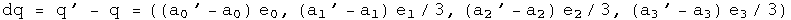
What is unusual about this definition are the factors of a third. They will be necessary later in order to define a holonomic equation later in this section. Hamilton gave each element parity with the others, a very reasonable approach. I have found that it is important to give the scalar and the sum of the 3-vector parity. Without this "scale" factor on the 3-vector, change in the scalar is not given its proper weight.
If dq is squared, the scalar part of the resulting quaternion forms a metric.
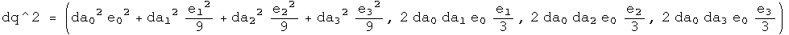
What should the connection be between the squares of the basis vectors? The amount of intrinsic curvature should be equal, so that a transformation between two basis 3-vectors does not contain a hidden bump. Should time be treated exactly like space? The Schwarzschild metric of general relativity suggests otherwise. Let e~1~, e~2~, and e~3~ form an independent, dimensionless, orthogonal basis for the 3-vector such that:
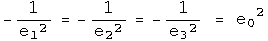
This unusual relationship between the basis vectors is consistent with Hamilton's choice of 1, i, j, k if e~0~^2^ = 1. For that case, calculate the square of dq:
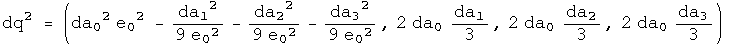
The scalar part is known in physics as the Minkowski interval between two events in flat space-time. If e~0~^2^ does not equal one, then the metric would apply to a non-flat space-time. A metric that has been measured experimentally is the Schwarzchild metric of general relativity. Set e~0~^2^ = (1 - 2 GM/c^2^ R), and calculate the square of dq:
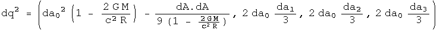
This is the Schwarzchild metric of general relativity. Notice that the 3-vector is unchanged (this may be a defining characteristic). There are very few opportunities for freedom in basic mathematical definitions. I have chosen this unusual relationships between the squares of the basis vectors to make a result from physics easy to express. Physics guides my choices in mathematical definitions :-)
An Automorphic Basis for Quaternion Analysis
A quaternion has 4 degrees of freedom. To completely specify a quaternion function, it must also have four degrees of freedom. Three other linearly- independent variables involving q can be defined using conjugates combined with rotations:
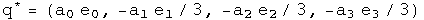
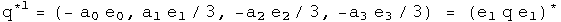
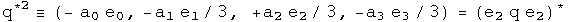
The conjugate as it is usually defined (q^^) flips the sign of all but the scalar. The q^1^ flips the signs of all but the e~1~ term, and q^2^ all but the e~2~ term. The set q, q^^, q^1^, q^2^ form the basis for quaternion analysis. The conjugate of a conjugate should give back the original quaternion.
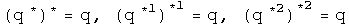
Something subtle but perhaps directly related to spin happens looking at how the conjugates effect products:
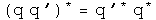
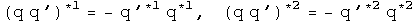
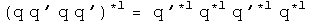
The conjugate applied to a product brings the result directly back to the reverse order of the elements. The first and second conjugates point things in exactly the opposite way. The property of going "half way around" is reminiscent of spin. A tighter link will need to be examined.
Future Time-like Derivative
Instead of the standard approach to quaternion analysis which focuses on left versus right derivatives, I concentrate on the ratio of scalars to 3-vectors. This is natural when thinking about the structure of Minkowski space-time, where the ratio of the change in time to the change in 3-space defines five separate regions: time-like past, time-like future, light-like past, light-like future, and space-like. There are no continuous Lorentz transformations to link these regions. Each region will require a separate definition of the derivative, and they will each have distinct properties. I will start with the simplest case, and look at a series of examples in detail.
Definition: The future time-like derivative:
Consider a covariant quaternion function f with a domain of H and a range of H. For a future time-like derivative to be defined, the 3-vector must approach zero faster than the positive scalar. If this is not the case, then this definition cannot be used. Implementing these requirements involves two limit processes applied sequentially to a differential quaternion D. First the limit of the three vector is taken as it goes to zero, (D - D^^)/2 -> 0. Second, the limit of the scalar is taken, (D + D^^)/2 -> +0 (the plus zero indicates that it must be approached with a time greater than zero, in other words, from the future). The net effect of these two limit processes is that D->0.
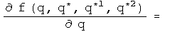
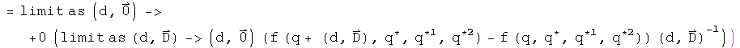
The definition is invariant under a passive transformation of the basis.
The 4 real variables a0, a1, a2, a3 can be represented by functions using the conjugates as a basis.

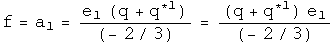
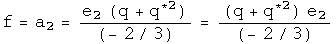
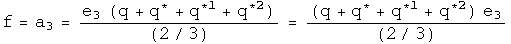
Begin with a simple example:

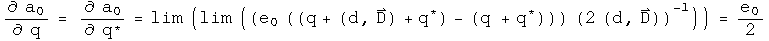
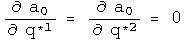
The definition gives the expected result.
A simple approach to a trickier example:
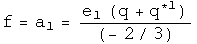
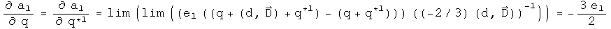
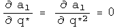
So far, the fancy double limit process has been irrelevant for these identity functions, because the differential element has been eliminated. That changes with the following example, a tricky approach to the same result.
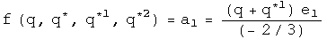

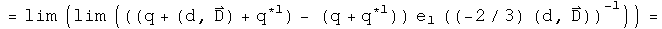
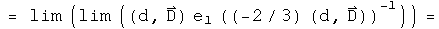
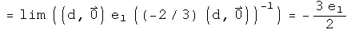
Because the 3-vector goes to zero faster than the scalar for the differential element, after the first limit process, the remaining differential is a scalar so it commutes with any quaternion. This is what is required to dance around the e~1~ and lead to the cancellation.
The initial hypothesis was that complex analysis should be a self-evident subset of quaternion analysis. So this quaternion derivative should match up with the complex case, which is:

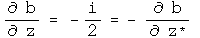
These are the same result up to two edits. Quaternions have three imaginary axes, which creates the factor of three. The conjugate of a complex number is really doing the work of the first quaternion conjugate q^1^ (which equals -z^^), because z^*^ flips the sign of the first 3-vector component, but no others.
The derivative of a quaternion applies equally well to polynomials.

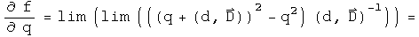
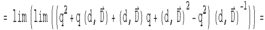
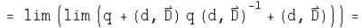

This is the expected result for this polynomial. It would be straightforward to show that all polynomials gave the expected results.
Mathematicians might be concerned by this result, because if the 3-vector D goes to -D nothing will change about the quaternion derivative. This is actually consistent with principles of special relativity. For time-like separated events, right and left depend on the inertial reference frame, so a time-like derivative should not depend on the direction of the 3-vector.
Analytic Functions
There are 4 types of quaternion derivatives and 4 component functions. The following table describes the 16 derivatives for this set
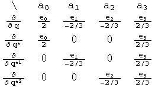
This table will be used extensively to evaluate if a function is analytic using the chain rule. Let's see if the identity function w = q is analytic.
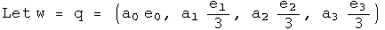
Use the chain rule to calculate the derivative will respect to each term:
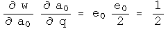
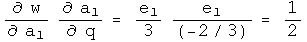
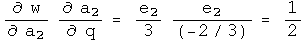
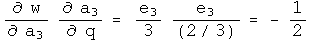
Use combinations of these terms to calculate the four quaternion derivatives using the chain rule.

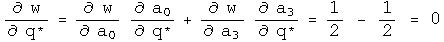
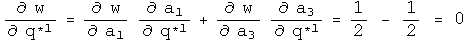
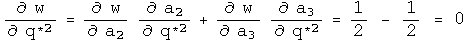
This has the derivatives expected if w=q is analytic in q.
Another test involves the Cauchy-Riemann equations. The presence of the three basis vectors changes things slightly.
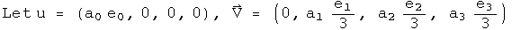
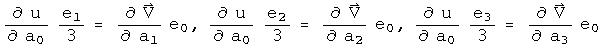
This also solves a holonomic equation.
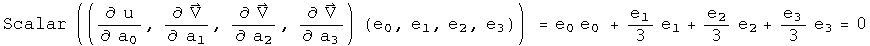
There are no off diagonal terms to compare.
This exercise can be repeated for the other identity functions. One noticeable change is that the role that the conjugate must play. Consider the identity function w = q^1^. To show that this is analytic in q^1^ requires that one always works with basis vectors of the q^*1^ variety.
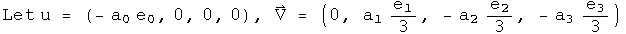
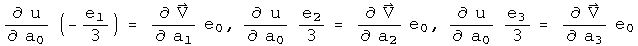
This also solves a first conjugate holonomic equation.
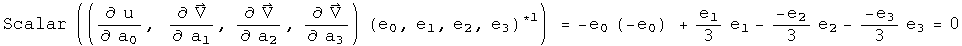
Power functions can be analyzed in exactly the same way:
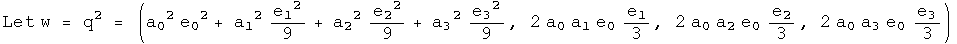
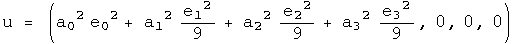
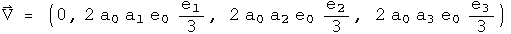
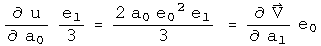
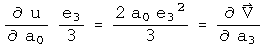
This time there are cross terms involved.
At first glance, one might think these are incorrect, since the signs of the derivatives are suppose to be opposite. Actually they are, but it is hidden in an accounting trick :-) For example, the derivative of u with respect to a1 has a factor of e~1~^2^, which makes it negative. The derivative of the first component of V with respect to a0 is positive. Keeping all the information about signs in the e's makes things look non-standard, but they are not.
Note that these are three scalar equalities. The other Cauchy-Riemann equations evaluate to a single 3-vector equation. This represents four constraints on the four degrees of freedom found in quaternions to find out if a function happens to be analytic.
This also solves a holonomic equation.
Since power series can be analytic, this should open the door to all forms of analysis. (I have done the case for the cube of q, and it too is analytic in q).
4 Other Derivatives
So far, this work has only involved future time-like derivatives. There are five other regions of space-time to cover. The simplest next case is for past time-like derivatives. The only change is in the limit, where the scalar approaches zero from below. This will make many derivatives look time symmetric, which is the case for most laws of physics.
A more complicated case involves space-like derivatives. In the space-like region, changes in time go to zero faster than the absolute value of the 3-vector. Therefore the order of the limit processes is reversed. This time the scalar approaches zero, then the 3-vector. This creates a problem, because after the first limit process, the differential element is (0, D), which will not commute with most quaternions. That will lead to the differential element not canceling. The way around this is to take its norm, which is a scalar.
A space-like differential element is defined by taking the ratio of a differential quaternion element D to its 3-vector, D - D^^. Let the norm of D approach zero. To be defined, the three vector must approach zero faster than its corresponding scalar. To make the definition non-singular everywhere, multiply by the conjugate. In the limit D D^^/((D - D^^)(D - D^^))* approaches (1, 0), a scalar.

To make this concrete, consider a simple example, f = q^2. Apply the definition:
The second and fifth terms are unitary rotations of the 3-vector B. Since the differential element D could be pointed anywhere, this is an arbitrary rotation. Define:
Substitute, and continue:
Look at how wonderfully strange this is! The arbitrary rotation of the 3-vector B means that this derivative is bound by an inequality. If D is in direction of B, then it will be an equality, but D could also be in the opposite direction, leading to a destruction of a contribution from the 3-vector. The space-like derivative can therefore interfere with itself. This is quite a natural thing to do in quantum mechanics. The space-like derivative is positive definite, and could be used to define a Banach space.
Defining the light-like derivative, where the change in time is equal to the change in space, will require more study. It may turn out that this derivative is singular everywhere, but it will require some skill to find a technically viable compromise between the space-like and time-like derivative to synthesis the light-like derivative.